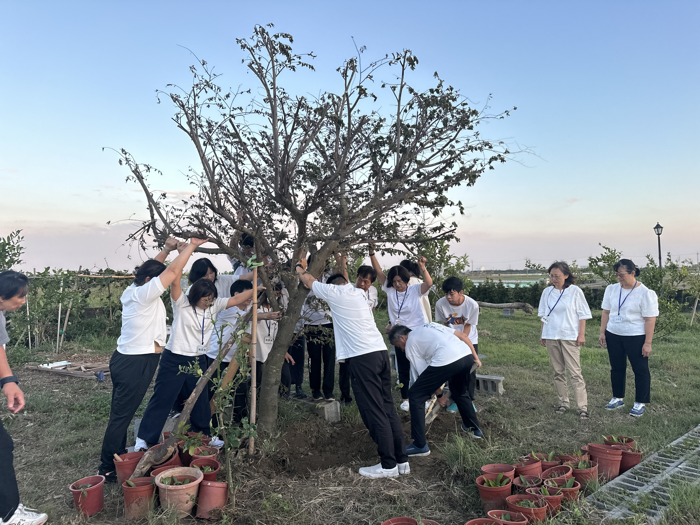
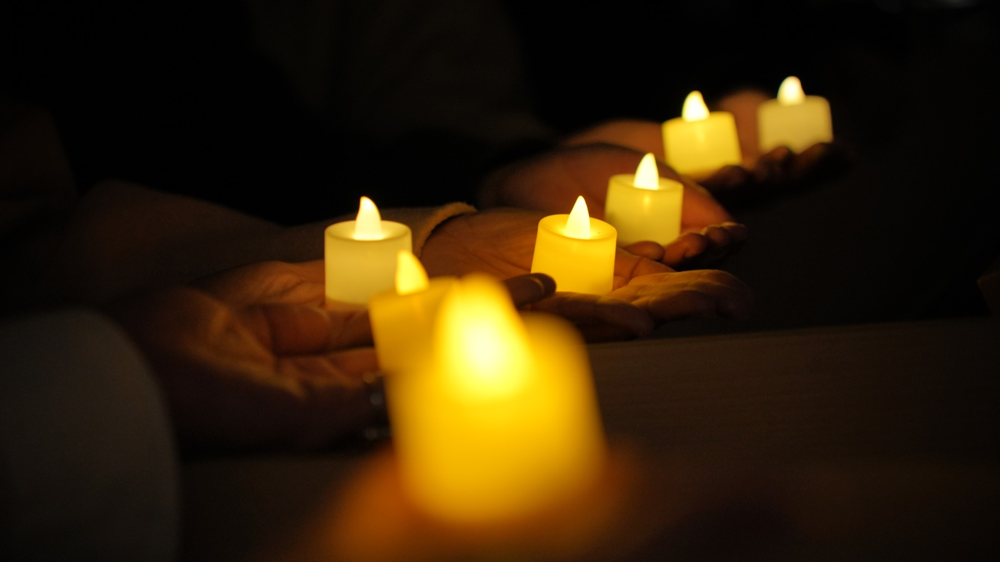
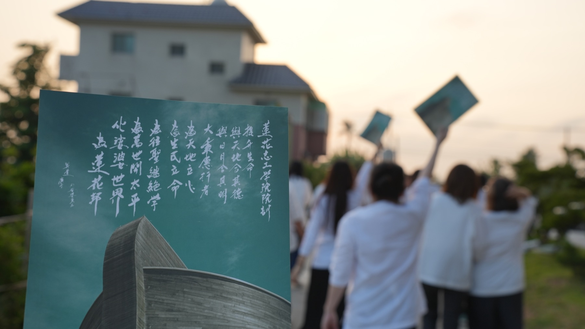
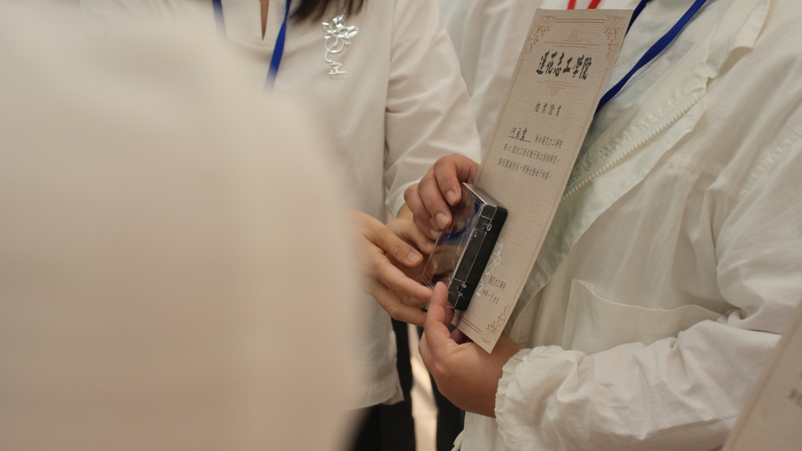
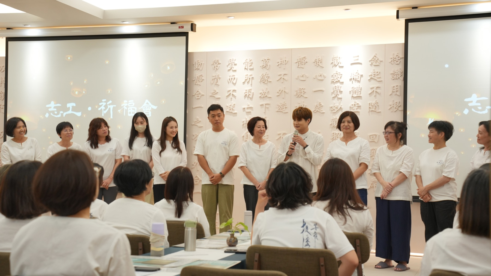
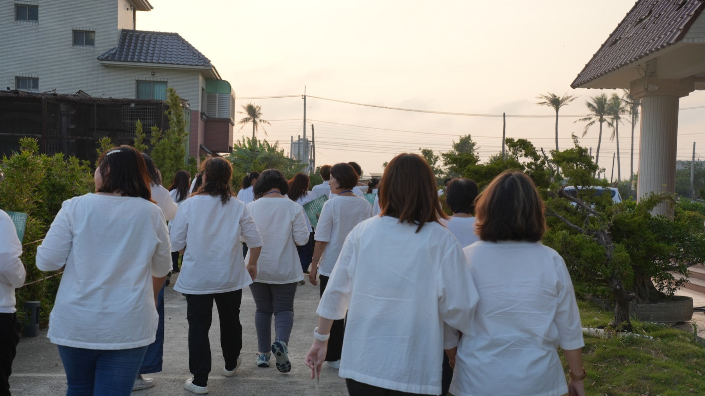

Haodao Volunteers
關於昊道志工Haodao Volunteers
Joyful vow
以生命陪伴生命
昊道文化志工，是一群單純無求，以生命陪伴生命，在服務與同行中持續學習、修煉與成長的人。
在一次次承擔與互動中，看見自己、調整自己，讓自己的生命愈來愈清明、穩定，也成為別人生命中的好環境。
在承擔中角色不同，做的事情不同，但背後都有相同的一份心：單純無求地付出，不為掌聲、不求回報；讓每一次服務，都成為生命彼此照見、彼此成就的因緣。
我們以「樂愿」同行，不把自己放在幫助者或拯救者的位置，而是相信每個生命本自具足。陪伴的意義，不是替誰改變人生，而是在同行之中，讓彼此都有機會看見自己、找回自己的力量，慢慢活出生命原有的光明。
無相修行 無求愿行
單純無求 樂愿同行
協同修辦 集體證量
In service
在服務中修心，在承擔中成長





